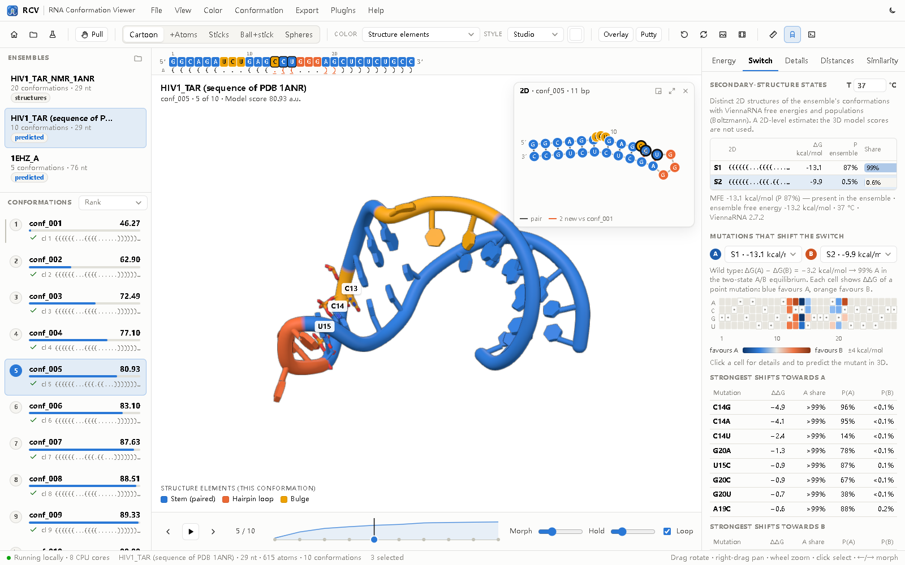
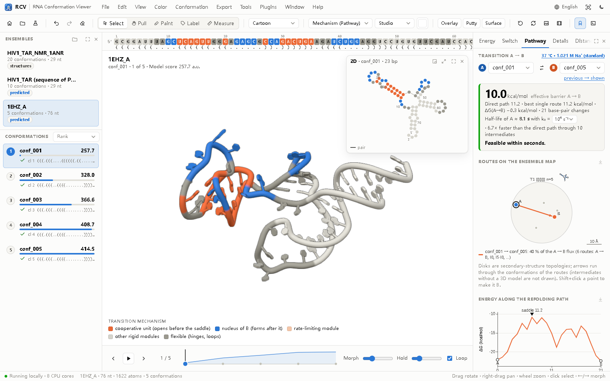
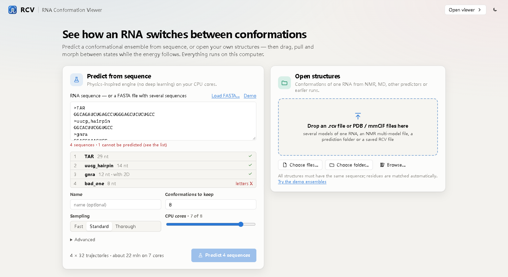
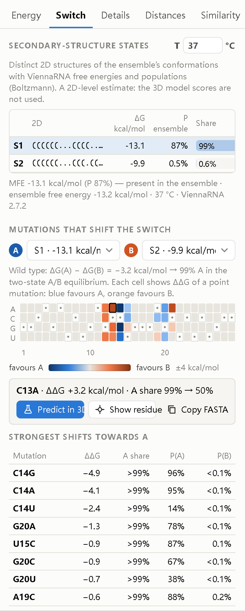
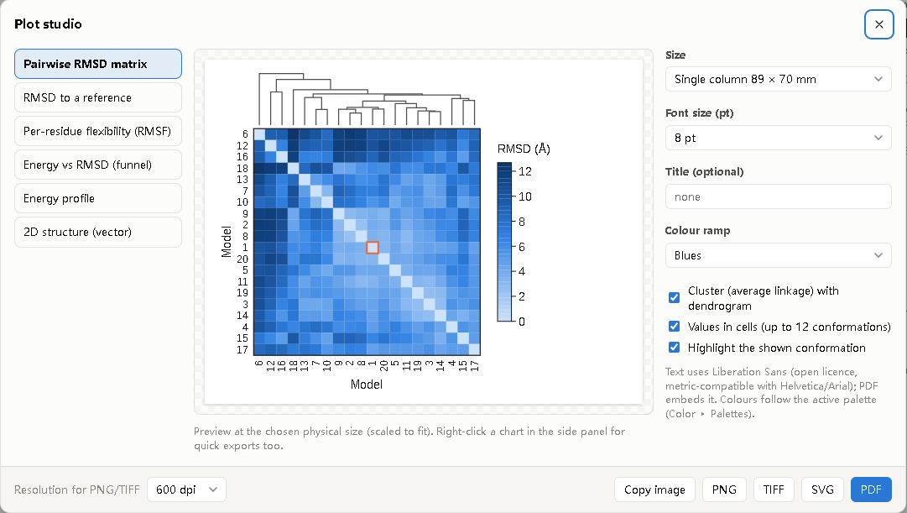
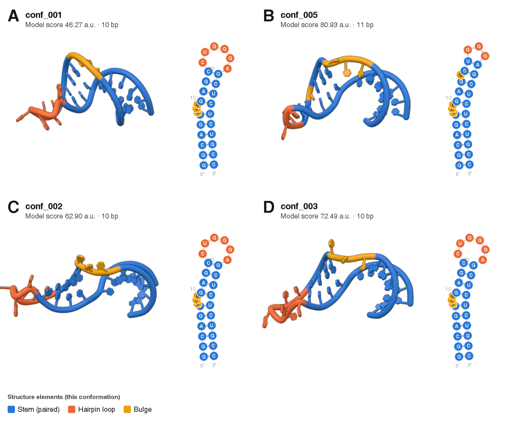
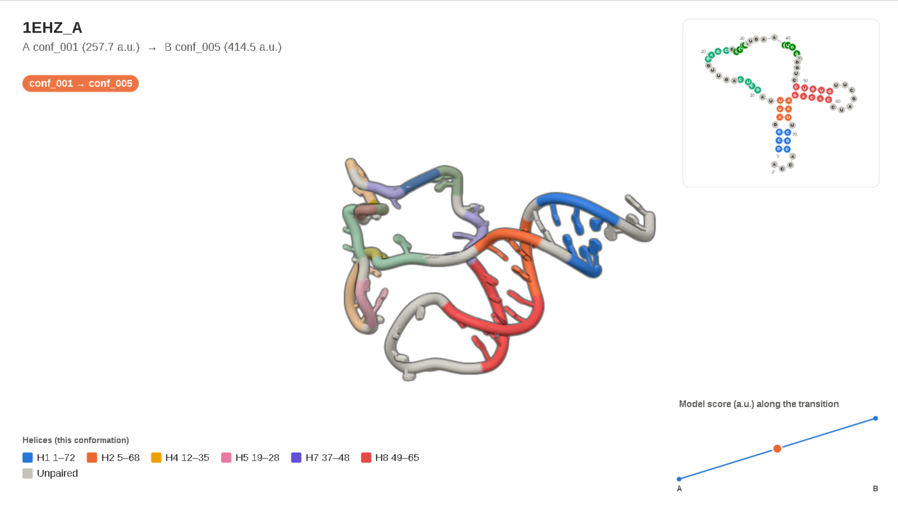
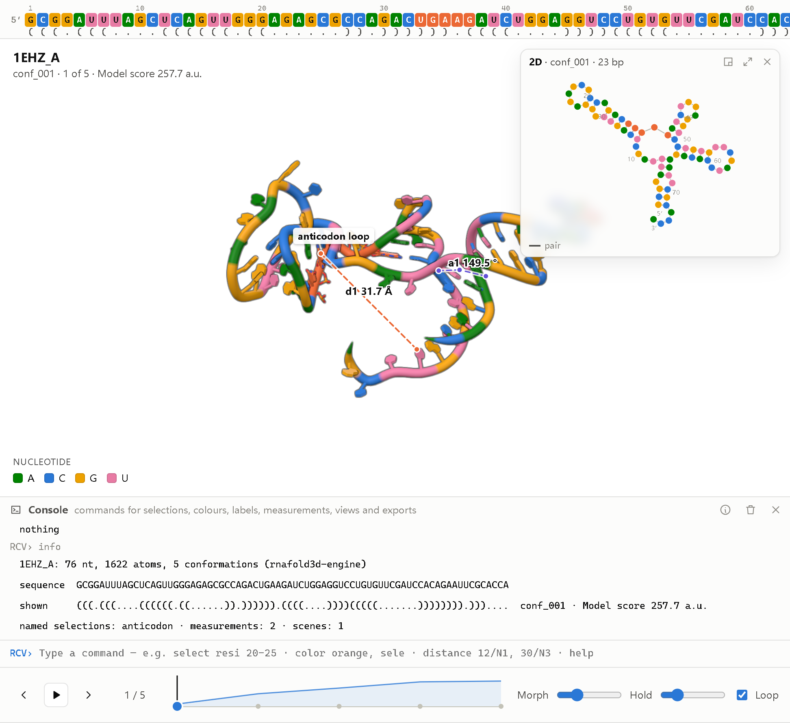
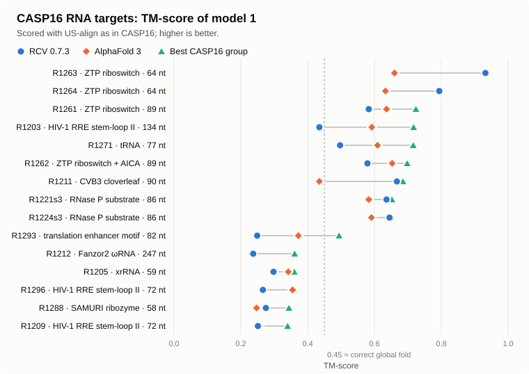
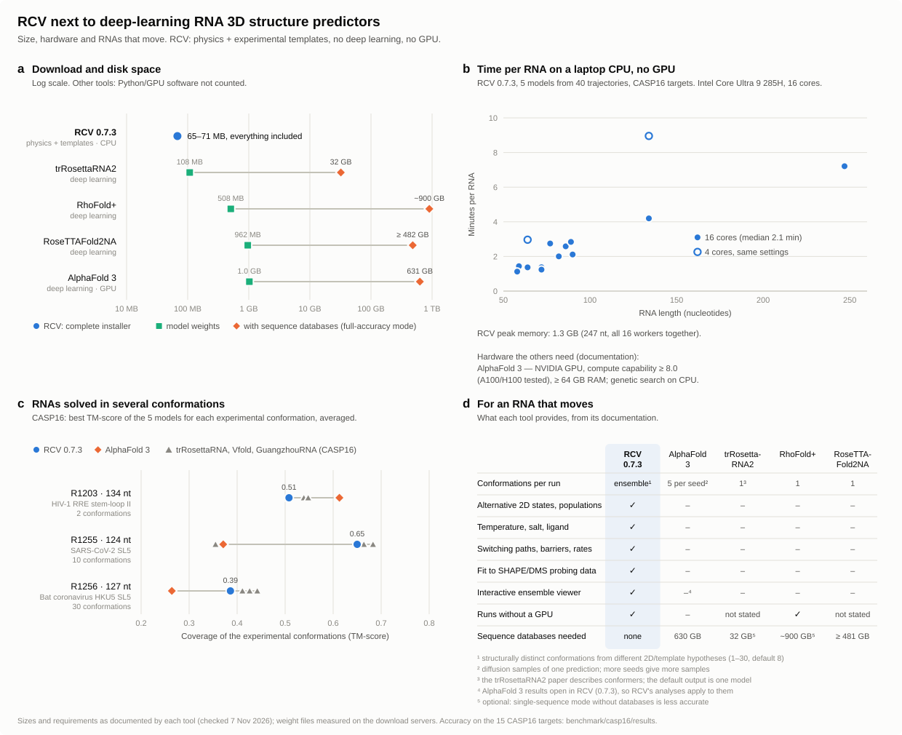

RNA Conformation Viewer
Predict, explore and present RNA conformations on your own computer. RCV is a free, open-source desktop application for RNA 3D conformation prediction, interactive molecular visualization, conformational ensemble analysis, and RNA conformational switching studies.
Unlike tools focused only on displaying a single RNA structure, RCV combines 3D visualization with linked secondary-structure views, multi-conformation exploration, switching analysis, mutation scanning, and publication-ready figure generation.
RCV supports Windows, macOS, and Linux. It is designed for researchers in RNA biology, structural biology, computational biology, and bioinformatics.
Keywords: RNA 3D structure viewer, RNA conformation visualization, RNA conformational ensemble, RNA conformational switching, RNA structure analysis, molecular visualization, bioinformatics software.
RNA structure is not confined to a single answer, and neither is life.
Download RCV 0.7.3 Get started

Main features
- Accurate 3D structures on a laptop. New Predictions build on related experimental structures from a built-in library of 3,964 RNA chains (21.5 MB). On the CASP16 blind test RCV’s first models are as accurate as AlphaFold 3’s (mean TM-score 0.49 and 0.48), in 1–7 minutes per RNA on a laptop CPU, no GPU. Learn more ›
- AlphaFold 3 inside RCV. New Run your own AlphaFold 3 installation from the start page, or open an AlphaFold Server result: all models open as one ensemble, coloured by pLDDT, with all of RCV’s analyses. Learn more ›
- Pathways: how A turns into B. The refolding barrier and routes between two conformations, the time to switch and any traps, the base pairs and coordinated 3D motions that limit the switch, and the point mutations that speed it up or slow it down (φ-value scan). A mechanism morph plays the motion. Learn more ›
- Topology-aware ensemble map. Every secondary-structure topology has its own region; inside it, conformations are placed by 3D similarity, with the switching routes drawn on top. Learn more ›
- Probing data. Load SHAPE or DMS reactivities: see how well each conformation agrees and reweight the ensemble to fit the data. Learn more ›
- Conditions and ligands. Temperature, Na+ and a ligand binding to an aptamer change the balance between conformations and the switching path. Learn more ›
- Per-nucleotide confidence. An optional small neural network estimates how accurate each part of a model is. It runs on any laptop; no GPU needed. Learn more ›
- Prediction from sequence. Paste a sequence or a multi-sequence FASTA file; RCV returns a ranked, validated all-atom ensemble. Learn more ›
- Open your own structures. NMR ensembles, MD snapshots, PDB/mmCIF files from any predictor. Several files of one RNA, or one multi-model file, open together as one ensemble. Learn more ›
- Pull to switch. Drag a residue and the structure moves to the nearest stable computed conformation. Learn more ›
- Linked 2D and 3D. The secondary structure follows the 3D view, with shared colours, hover and selection. Learn more ›
- Switch analysis. Boltzmann populations of 2D states and a point-mutation scan. Learn more ›
- Command console. A selection language for RNA ensembles and familiar molecular-viewer commands. Learn more ›
- Publication output. Figures, figure panels, a plot studio (clustered RMSD matrix, RMSF, energy funnel), annotations, colour-blind-safe palettes, molecular surfaces, transition videos, interactive HTML pages and methods text. Learn more ›
- Your language, your layout. English, 简体中文, 繁體中文, 日本語, 한국어, Español, Français, Deutsch, Italiano, Português and Русский; every panel can be shown, hidden or maximised. Learn more ›
- One file per RNA. The open
.rcvformat stores all conformations, 10–14× smaller than PDB. Learn more ›
More functions
- Batch prediction and command-line tools. Predict up to 100 sequences from one FASTA file; convert, inspect, extract and analyse
.rcvfiles without the window. Learn more › - Fetch from the PDB. Type a PDB ID and RCV downloads and opens the entry. Learn more ›
- Mouse tools, annotations and undo. Select, pull, paint, label and measure like in a drawing program, with full undo. Learn more ›
- Measurements, selections and scenes. Distances, angles and dihedrals that follow every morph and can be plotted across the ensemble. Learn more ›
- Colours, palettes and surface. Structure-aware colour schemes, colour-blind-safe palettes with a colour-vision check, molecular surface and transparency. Learn more ›
- Energies and metrics. Engine scores, evaluator energies and structural descriptors to compare and sort conformations. Learn more ›
- Plugins. Add your own colour schemes, metrics, panels, commands and analyses. Learn more ›
- Keyboard shortcuts. One key for every tool and view. Learn more ›

Download
RCV is free and open-source software, released under the GNU General Public License v3.0. The desktop installers include Python, the prediction engine, ViennaRNA and the demo data; nothing else needs to be installed.
RCV 0.7.3 (7 November 2026)
New in this version: 3D models from related experimental structures (a built-in library of 3,964 RNA chains), as accurate as AlphaFold 3 on the CASP16 blind test on a laptop CPU, and AlphaFold 3 and AlphaFold Server results inside RCV. Release notes.
| Platform | File | Notes |
|---|---|---|
| Windows 10/11 (64-bit) | RCV-0.7.3-Windows-x64-Setup.exe (65 MB) | Installer with Start-menu entries (RCV, demo ensembles, user guide) and optional .rcv file association. |
| macOS 14+ (Apple Silicon) | RCV-0.7.3-macOS-arm64.dmg (66 MB) | For Macs with an M-series chip (M1 and later). |
| macOS 14+ (Intel) | RCV-0.7.3-macOS-x86_64.dmg (71 MB) | For Intel-based Macs. |
| Linux 64-bit: Debian, Ubuntu, Linux Mint | RCV-0.7.3-Linux-amd64.deb (68 MB) | Ubuntu 20.04, Debian 11 or newer. Adds the rcv command and a menu entry. |
| Linux 64-bit: Fedora, RHEL, Rocky, AlmaLinux, openSUSE | RCV-0.7.3-Linux-x86_64.rpm (67 MB) | Fedora 32, RHEL 9, openSUSE Leap 15.6 or newer. |
| Any platform | Source code (zip) | Requires Python 3.10 or later. See Install. |
SHA-256 checksums
e16808842fc33808c90e44c6e387415800eb5cf80b3d24cb1ffdc1dfe4a16ecb RCV-0.7.3-Windows-x64-Setup.exe
3ee722f51bc894d79aa926249a496595e32774c6bbae3b031e4749f3d953b69e RCV-0.7.3-macOS-arm64.dmg
254f7905db7de0dbb737027f92021831c9cad4f4c767b5a7c94456f117af9f5c RCV-0.7.3-macOS-x86_64.dmg
721df47e22644eb766ea5c57a2be5844825c7df3f15544c8310d8cfa5661ea5a RCV-0.7.3-Linux-amd64.deb
f18ba9a9c3c7d73fa52589dff6d990292116fbbce967bad576f40e75733502ef RCV-0.7.3-Linux-x86_64.rpmEarlier versions are on the releases page. Earlier releases were named RNAconfSwitch (0.4) and RNAconformer Viewer (0.3); their settings, plugins and projects are read by RCV 0.7.
System requirements
| Minimum | Recommended | |
|---|---|---|
| Operating system | Windows 10 (64-bit), macOS 14, 64-bit Linux (Ubuntu 20.04, Debian 11, Fedora 32, RHEL 9 or newer) | Windows 11, macOS 15, a current Linux with Chrome or Chromium |
| Processor | 2 cores | 8 or more cores (predictions run in parallel) |
| Memory | 4 GB | 16 GB |
| Graphics | Any GPU with WebGL 2 support | |
| Internet | Not required. Only the optional fetch command downloads entries from the PDB. | |
License
RCV is distributed under the GPL-3.0 license.
The installers also contain ViennaRNA, which is free for research, educational and commercial use under its
own license (credit to its authors: Lorenz et al. 2011, Institute for Theoretical Chemistry, University of
Vienna), Python, NumPy, SciPy and three.js; their licenses are listed in THIRD-PARTY-NOTICES.txt
in the installation folder.
Install
Windows
- Download
RCV-0.7.3-Windows-x64-Setup.exe. - Run the installer and follow the steps. Optionally create a desktop shortcut and associate
.rcvfiles with RCV. - Start RCV from the Start menu. The Start menu also has RCV with demo ensembles, the RCV User Guide and What is new in RCV.
If Windows SmartScreen shows a warning, choose More info › Run anyway. RCV uses the Microsoft Edge WebView2 runtime, which is part of Windows 11 and current Windows 10.
macOS
- Download the
.dmgfor your Mac (Apple Silicon or Intel). - Open the disk image and drag RCV to the Applications folder.
- The first time, right-click RCV and choose Open (or System Settings › Privacy & Security › Open Anyway), because the app is not yet notarised by Apple.
To open an .rcv file on macOS, use File › Open inside RCV.
RCV needs macOS 14 (Sonoma) or later.
Linux
- Download the
.deb(Debian, Ubuntu, Linux Mint) or the.rpm(Fedora, RHEL, Rocky, AlmaLinux, openSUSE). - Install it from the download folder:
sudo apt install ./RCV-0.7.3-Linux-amd64.deb # Debian, Ubuntu, Linux Mint sudo dnf install ./RCV-0.7.3-Linux-x86_64.rpm # Fedora, RHEL, Rocky, AlmaLinux sudo zypper install --allow-unsigned-rpm ./RCV-0.7.3-Linux-x86_64.rpm # openSUSE - Start RCV from the applications menu or type
rcvin a terminal. Right-click the menu entry for RCV with demo ensembles and the RCV User Guide;.rcvfiles open with RCV.
RCV opens in a Chrome, Chromium or Edge app window when one of them is installed, otherwise in
your default browser, and quits when you close that window. The user guide is also in
/opt/rcv/docs.
Installation from source (any system)
Requirements: Python 3.10 or later with numpy and scipy. ViennaRNA is needed for
prediction from sequence and for the switch analysis.
git clone https://github.com/PrinceWang2018/RNAconformer.git
cd RNAconformer
pip install -e . # installs the rcv and rnafold3d commands
conda install -c bioconda viennarna # or: pip install ViennaRNA
pip install pywebview # optional: native windowCheck the installation
rcv --demo # opens RCV with the HIV-1 TAR NMR ensemble and two predictions
rcv # opens the start pageWithout pywebview, RCV opens in an Edge or Chrome application window. Useful options:
--port 8765, --projects-dir DIR, --shell auto|webview|window|browser.
Where RCV keeps its files
| System | Settings, logs and plugins |
|---|---|
| Windows | %APPDATA%\RCV |
| macOS | ~/Library/Application Support/RCV |
| Linux | ~/.local/share/rcv |
Predictions are saved in Documents/RCV/projects by default (View › Preferences).
Uninstall
Windows: Settings › Apps › RCV › Uninstall. macOS: move RCV from Applications
to the Trash. Linux: sudo apt remove rcv, sudo dnf remove rcv or
sudo zypper remove rcv. Source install: pip uninstall rna-conformation-viewer. Your projects and settings
are kept unless you delete the folders listed above.
Tutorial
This tutorial walks through everything RCV does, from the first prediction to a publication figure. Each
section explains what a feature is for, how to use it step by step, and how to read the result. Most sections
can be followed with the demo ensembles (start page › Demo ensembles, or
rcv --demo): the HIV-1 TAR NMR ensemble (PDB 1ANR, 20 models), a prediction of HIV-1 TAR (29 nt) and
a prediction of yeast tRNAPhe (76 nt), so you do not have to wait for a prediction. Use the contents
to jump to a section; every menu, option and command is listed in the full user guide.
Get started
The start page
When RCV starts, it shows the two ways to use it, side by side:
- Predict RNA conformations from sequence(s). Paste one RNA sequence, or several in FASTA format, and click Predict conformations (next section).
- View experimental or predicted structures of one RNA. Click Open files… or drop files
on the card: PDB/mmCIF files, a multi-model NMR file, an
.rcvfile or a prediction folder. Several structure files of the same RNA open together as one ensemble. Fetch PDB… downloads an entry from the PDB; Demo ensembles opens examples to look around first (Open your own structures).
Recent predictions, below the two cards, lists the latest runs in your projects folder; click one to reopen it instantly. Browse folders… and All prediction runs… find older ones. You can come back to the start page at any time with the start-page button in the toolbar or Ctrl+H, and the globe button at the top chooses the interface language.

Predict from sequence
RCV predicts an ensemble of distinct all-atom 3D conformations from a sequence with its built-in rnafold3d engine. The engine looks for related experimental structures (templates) in its built-in library of 3,964 RNA chains from the PDB and builds 3D models on them; it also builds models for several ViennaRNA secondary-structure hypotheses (the MFE and distinct suboptimal structures), with junction shapes taken from known structures, searches their folds, validates every model and keeps a ranked set of structurally different conformations (How it works). Everything runs on your own CPU cores; no internet connection and no GPU are needed.
One sequence
- Paste the sequence into the box on the start page: plain text or FASTA, T is read as U. The line under the box checks the input as you type and estimates the run time. Leave the box empty to run the demo sequence (HIV-1 TAR, 29 nt).
- Optional: open Advanced settings to set
- a name for the run;
- the number of conformations to keep;
- the sampling depth: Fast, Standard or Thorough (2, 4 or 8 trajectories per kept conformation; deeper sampling takes longer and explores more);
- the number of CPU cores;
- a known secondary structure in dot-bracket notation, if you have one;
- the random seed. The same seed and version always give the same result;
- Use related experimental structures (templates), on by default. Switch it off for a physics-only prediction, for example to test whether a design folds on its own.
- Click Predict conformations (or press Ctrl+Enter).
The progress view shows each stage (secondary structures → 3D sampling → validation and selection
→ opening the viewer), a progress bar with the time left, and plain-language notes on what the engine is
doing: the templates found, the ViennaRNA hypotheses and their energies, the cores used, trajectories that were
rejected and why, and the conformations kept. Cancel stops the engine. When the run finishes, the viewer opens. The run
folder holds PDB and mmCIF files, the engine manifest and a <name>.rcv file.
Several sequences (batch)
- Paste a multi-record FASTA text, or use Load a FASTA file… (dropping a FASTA file on the box works too). A dot-bracket line after a sequence is used as its known secondary structure.
- RCV lists the sequences with a check for each and offers Predict N sequences (up to 100). The sequences run one after another, each on all chosen cores.
- The progress view shows one stage per sequence and an overall time estimate. A failed sequence does not stop the batch.
- When the batch ends, a table lists every sequence (conformations, best score, MFE ΔG, number of 2D
states, time, status). Choose the prediction to open (radio button or double-click, then
Open selected in the viewer). The others stay in the batch folder as
.rcvfiles, withbatch_summary.csvandbatch.json.
The Details tab shows the template of every conformation, with a link to its PDB entry.
Typical run times on an 8-core laptop: a 12–14 nt hairpin with Fast sampling, 10–60 s; a 29 nt hairpin with Standard sampling, 5–7 minutes. With 16 cores and Thorough sampling, the 60–250 nt CASP16 RNAs took 1–7 minutes each (Benchmark).
Reference: user guide §2, §3, §3.1.
Open your own structures
RCV is also a viewer and analysis tool for structures from anywhere: NMR ensembles, MD snapshots, or models from any 3D predictor.
- Formats: PDB, mmCIF, multi-model (NMR) files, rnafold3d prediction folders,
.rcvfiles and RCV workspaces. - How to open: Open files… on the start page, File › Open (Ctrl+O), or drop files anywhere on the window.
- One ensemble from several files. Several structure files, or the models of one multi-model file,
open together as one ensemble of the same RNA, in file-name order (
model_2beforemodel_10). The first is the reference for superposition. Residues are matched by position when the sequences are identical, otherwise by author numbering. Files of different RNAs opened together give one ensemble per RNA. - Fetch from the PDB (Fetch PDB…, Ctrl+Shift+F, or console
fetch 1ANR): type a 4-character PDB ID, optionally a chain. RCV downloads the mmCIF file from the RCSB PDB intoprojects/fetched/and opens it. This is the only time RCV uses the internet, and only when you ask.
From a terminal:
rcv models/*.pdb # several files of one RNA: one ensemble, one conformation per file
rcv models/ # the same from a folder
rcv 1ANR.cif # multi-model file: one conformation per model
rcv 1ANR.cif --chain B # one chain of a multi-chain file
rcv a.pdb b.pdb --separate # every file as its own ensembleWildcards such as models\*.pdb also work in the Windows Command Prompt and
PowerShell. Multi-chain complexes and non-canonical base-pair annotation are not supported yet.
1EHZ and compare the crystal
structure of tRNAPhe with the demo prediction.Reference: user guide §11.
AlphaFold 3 in RCV
RCV can show AlphaFold 3 predictions as ensembles, with all its analyses (switching, pathways, probing data, publication output). AlphaFold 3 is not included in RCV.
- AlphaFold Server results. Download the
.zipof a job from the AlphaFold Server and open it with AlphaFold Server results on the start page (card 2). All sampled models open as one ensemble, best ranking score first, with the pLDDT of every nucleotide (colour by Confidence), the ranking score, pTM and the fraction disordered as metrics. The output folder of a local AlphaFold 3 run opens the same way. - Your own AlphaFold 3 installation. On the start page (card 1) choose Engine: AlphaFold 3
(local) and fill in AlphaFold 3 settings… once: the Python of the AlphaFold 3
environment,
run_alphafold.py, the model parameters and, optionally, the databases. For Docker, WSL or a cluster, give a custom command instead. Check tests the installation. RCV writes the input, runs AlphaFold 3, shows its log and opens every model as one ensemble.
Reference: user guide §2, §3.2.
Explore
Explore the ensemble
| Area | What it does |
|---|---|
| Left panel | Open ensembles and their conformations, ordered by energy or any other metric, each with a value bar, a validation mark and a small 2D drawing. Hover = orange ghost preview, click = morph to it, right-click = transition video, compare, save as PDB. |
| 3D view | Drag to rotate, right-drag or Shift-drag to pan, wheel to zoom, Ctrl-drag to roll, double-click to centre. Right-click a residue for its menu: select the residue, its pair, helix or neighbours; show sticks or spheres, hide, label, colour; zoom; measure from here. Inside a selection, the action applies to the whole selection. |
| Sequence bar | The sequence coloured like the structure, with the dot-bracket of the shown conformation underneath (Linked 2D and 3D). |
| Timeline | Previous / play / next, a scrubber with an energy sparkline (drag it to morph continuously), morph and hold times, loop. |
| Right panel | Energy (below), Switch (10), Pathway (11), Details (selection, named selections and scenes, measurements, probing data, conformation facts, all metrics, all conformations, provenance) and plugin tabs. |
Step through the conformations
- ←/→ previous/next, Home/End first/last, Space plays through all conformations.
- E overlays the whole ensemble; P shows putty (tube width = flexibility across the ensemble).
- Morphs are smooth interpolations between superposed conformations: a visual aid, not a simulated pathway.
The Energy tab
Choose a metric at the top (energy, scores, descriptors, measurements, confidence…). The large value shows it for the shown conformation, with the change from the previous one. Below are the energy profile, a landscape view (Funnel, the topology-aware Map of section 12, or classical MDS) whose marker follows every morph, the additive energy terms and a two-sided base-pair arc diagram. Every chart has an export button (PDF, SVG, PNG, TIFF, copy, or Open in the plot studio); right-click a table to copy it as tab- or comma-separated text.
The window behaves like a desktop program: text is not selected by accident, right-click shows RCV's own menus, and browser shortcuts are replaced (Ctrl+F selects residues, Ctrl+P exports an image).
Reference: user guide §4.
Linked 2D and 3D
The secondary structure is always in view and always in step with the 3D model.
The 2D window
Press D (or View › 2D structure window) for a small window in a corner of the 3D view. It draws the secondary structure of the shown conformation (ViennaRNA NAView layout, 5′/3′ ends at the bottom):
- nucleotides are coloured exactly like the 3D structure, in any scheme and with custom colours;
- hover a nucleotide to highlight it in 3D and in the sequence bar (and the other way round); click selects (Shift adds), double-click centres the 3D view on it;
- when the conformation changes, the drawing morphs with the 3D model: pairs that break fade out in the first half, new pairs fade in during the second half and stay orange; pseudoknotted pairs are purple arcs;
- buttons move it to another corner and switch between small, medium and large; maximise it from its title bar.
The sequence bar
The sequence, numbered and coloured like the structure, with the dot-bracket of the shown conformation underneath. Positions whose pairing changed since the previous conformation are underlined. Click, Shift+click or drag to select; hover to highlight in 3D and 2D.
The same 2D drawing appears in transition videos, figure panels and the interactive HTML page.
Reference: user guide §5.
Pull to switch
Ask the structure directly: what happens if this part moves over there?
- Choose the Pull tool (G), or hold Alt.
- Drag a residue. The structure stretches elastically, and the computed conformation that best matches the pull is shown as an orange ghost with its energy change.
- Release: the structure morphs to that conformation. Among about equally good matches RCV takes the most stable one (relatively stable, not necessarily the lowest).
- If no existing conformation fits, click Explore new conformations. RCV runs the engine with your pull as a temporary bias, relaxes the new models without it, and adds the stable ones to the ensemble. This takes a few minutes; you can keep working.
In tests on TAR, the chosen conformation put the dragged residue 2.3–3.2 Å from the cursor, against about 6 Å for staying put. Pull switching chooses among computed conformations; helices are rigid.
Reference: user guide §6.
Mouse tools, annotations and undo
The left mouse button works like in a drawing program. Choose the tool in the toolbar or with one key:
| Tool | Key | Left button in the 3D view |
|---|---|---|
| Select | V | Click selects a residue (Shift adds), drag rotates. |
| Pull | G / Alt | Drag a residue to switch conformation (Pull to switch). |
| Paint | B | Click or drag over residues (or single atoms) to give them the paint colour. The chip next to the tool picks palette colours or any colour. |
| Label | T | Click a residue to label it; drag labels to move them; double-click or right-click a label to edit text, colour, size, arrow and box; Delete removes it. |
| Measure | M | Click two atoms for a distance (next section). |
Annotations are residue labels, region labels (a bracket over a selection, for example
"anticodon stem") and free notes or titles (Edit › Add a title / note). They follow the structure
during morphs, appear in images, figure panels and videos, and are saved in .rcv files.
Undo / redo (Ctrl+Z, Ctrl+Y) step through every edit of the open ensemble: annotations, paint and custom colours, labels, hidden residues, representations, measurements, selection, colour scheme, style, background, surface and transparency, including changes made with console commands. Each ensemble has its own history. Clear (eraser button, Edit menu) removes one kind of edit at a time, or everything; clearing can be undone too.
Reference: user guide §4.1.
Measurements, named selections and scenes
- Measurements. With the Measure tool (M), click two atoms for a distance; the console adds angles and dihedrals. Measurements are dashed lines with live values that follow every morph. Each measurement also becomes a metric, so you can plot its value across all conformations in the Energy tab and export it in the CSV table.
- Named selections (console
select name, …or + Selection in the Details tab) are chips you can click to reselect, zoom to or delete. Any command accepts them by name. - Scenes (
view save nameor + Scene) remember the camera, conformation, colours, representation, overlay, putty and selection. Recalling a scene flies the camera there and morphs to its conformation, which makes it easy to return to the same figure view.
distance d1, 22/N1, 27/N3 # a distance between two atoms (residue/atom)
angle a1, 22/P, 23/P, 24/P
select bulge, resi 23-25
view save closeup # later: view closeup
metric measure.d1 # plot d1 across the ensembleAll of these, plus custom colours, labels and hidden residues, are saved in .rcv files.
Reference: user guide §10.
Representations, colours, palettes and surface
- Representations (1–5): Cartoon, Cartoon + atoms, Sticks, Ball & stick,
Spheres, for the whole RNA or, from the console, for part of it (
show sticks, switching). - Colour schemes (toolbar or C): Nucleotide, Helices, Structure elements (stem, hairpin loop, internal loop, bulge, multibranch loop, pseudoknot, exterior), Base pairing, Pairing frequency, Switching residues, Flexibility (RMSF), Displacement from previous, Position, Uniform, and, after the analyses, Mutation sensitivity, Kinetic sensitivity, Mechanism, Reactivity and Confidence. Every scheme has a legend; custom colours go on top.
- Styles and backgrounds: Studio, Illustrative, Glossy, Depth cue, Plain; white, paper, grey, slate, dark, black or custom.
- Palettes (Color › Palettes and custom colours…): RCV, Okabe–Ito and Tol bright / muted (colour-blind safe), Pastel, Grayscale for print, or your own. The palette drives helix, element and nucleotide colours, the paint tool, annotations, measurements and plots, so a whole figure changes with one click. Duplicate to edit makes an editable copy; palettes can be shared as JSON. The colour-vision check simulates deuteranopia, protanopia and tritanopia and names the pair of colours readers may confuse.
- Molecular surface (U, or
show surface, selection): a smooth Gaussian surface, coloured like the residues under it and recomputed during morphs and videos (a 76-nt tRNA in about 0.15 s). - Transparency per object (View › Surface and transparency…, or
set transparency, 0.5, surface): separate opacity for cartoon, bases, atoms, surface and the ensemble overlay, for example a 40 % surface over an opaque cartoon.
Reference: user guide §13.
Analyse
Switch analysis
For an RNA switch the questions are usually: which state dominates, and what would change that? The Switch tab answers them at the secondary-structure level with ViennaRNA (Turner 2004 energies).
- Read the 2D states. The table lists the distinct secondary structures of the ensemble's conformations, each with its free energy, its probability in the full ViennaRNA ensemble, its share of the population among these states (Boltzmann) and the number of models (click to step through them). The MFE and the ensemble free energy are shown for reference.
- Change the temperature (0–95 °C) to look at thermo-switches, or open Conditions for salt and ligands (section 13).
- Choose states A and B. RCV evaluates every point mutation (3 × length mutants) and draws a heat map of how each shifts the balance (ΔΔG): blue favours A, orange favours B, saturating at ±4 kcal/mol. Hover a cell for the shift of the A/B equilibrium. The tables list the strongest mutations in each direction with the probabilities of A and B in the mutant.
- Act on it. Click a cell to select the residue in 3D, copy the mutant as FASTA, or Predict in 3D (opens the start page with the mutant ready). Colour 3D by mutation sensitivity paints each residue by its largest |ΔΔG|; Copy scan as table gives all mutations as tab-separated text.

With a ligand set in Conditions, the ligand response chart shows the share of every state from 1 nM to 1 mM and the half-way concentration of the states that bind.
These are secondary-structure estimates; the 3D model scores are not used, and populations are not experimental values. A mutation that turns a pair non-canonical removes that pair from the state.
Reference: user guide §7.
Pathway A → B
The Pathway tab shows how one conformation turns into another. To start, choose A and B in the
tab (or previous → shown, or Shift+click a point on the ensemble map to make it B). It is also in
Tools › Pathway A → B and the console (pathway conf_001, conf_005). RCV answers
three questions.
1. Is the switch feasible, and along which route?
- A and B first relax into their basins, the local energy minima they reach by steepest descent. A structure that is not itself a minimum (a frayed NMR model, a strained pair) slides into its basin first, so barriers are measured between basins. If A and B reach the same basin, no barrier separates them: they are fluctuations of one fold, and the verdict says so.
- Otherwise RCV computes the direct refolding path (only pairs of A open, only pairs of B form) and routes through intermediates: the basins of the other 2D states of the ensemble and local minima from Boltzmann samples (fixed seed, so the result is reproducible).
- The basins and the saddles between them form a network with Arrhenius rates k = k₀·exp(−(saddle − E)/RT) (k₀ adjustable, default 10⁶ s⁻¹). Transition path theory ranks the routes by reactive flux, and the time to switch is the mean first-passage time from A to B.
Reading the verdict card: the effective barrier, the barriers of the direct path and of the best single route, ΔG(A→B), the half-life of A, and a plain-language feasibility statement. For example, a half-life over a year means the switch is not feasible by refolding alone; it needs unfolding, a helper such as a helicase or chaperone, or happens during transcription. A trap note appears when a deeper well holds the RNA for most of the switching time.
Reading the charts: the map shows the routes through 3D conformations (2D-only intermediates are listed, not drawn). The energy profile shows every base-pair move: relaxation into the basins (dotted), the route (solid), the direct path (dashed) and the saddle. Hover a step to see which pairs open or form, highlighted in 3D.
2. What limits it?
- The cooperative unit: the base pairs that must open together on the climb to the highest saddle. The nucleus: the B pairs that form right after it.
- Rigid modules: RCV splits the molecule into groups that move as one body between A and B (seeded by the shared helices, fit within 2 Å). Each module is reported with its turn (degrees), shift (Å) and screw axis relative to the largest module M1, and the time window of its base-pair events (0 = A, 1 = B). Hinges are the flexible residues with the largest backbone change. The module that carries the cooperative unit is the rate-limiting coordinated motion.
- Colour by mechanism, by event order or by module paints the 3D view. Play the mechanism morphs A into B with the modules turning in the order of their events (chain kept connected); Rigid-module morph moves all modules together; Mechanism video… records it.
3. Which mutations change the rate?
The φ-value scan (button in the tab, or console phiscan) evaluates every point mutation
along the route:
- ΔΔG‡, the change of the barrier: blue = faster switching, orange = slower;
- ΔΔG, the change of the A/B balance;
- φ = ΔΔG‡/ΔΔG (where |ΔΔG| ≥ 0.6 kcal/mol): near 1 where the nucleotide already looks as in B at the saddle, near 0 where it still looks as in A.
The lists name the mutations that speed the switch up or slow it down most, with the factor on the rate. Colour 3D by kinetic sensitivity and Copy scan as table work as in the Switch tab.
pathway conf_001, conf_005 # console
phiscan
mechanism staged # or: mechanism rigid
rcv pathway tRNA.rcv --a conf_001 --b conf_005 --scan -o result.json # command lineThe kinetics are computed for nested canonical pairs at the secondary-structure level (ViennaRNA, under the current conditions). Barriers are upper bounds; rates are order-of-magnitude estimates that scale with k₀. Rigid modules are only as reliable as the two 3D models, and the morph illustrates the analysed mechanism; it is not a simulated trajectory.
Reference: user guide §8.1.
Topology-aware ensemble map
The Map view (Energy tab, also in the Pathway tab, the plot studio and the HTML page) shows the whole ensemble at a glance:
- Every secondary-structure topology, the abstract shape of the 2D structure (
[]one hairpin,[][]two hairpins,[[][]]a multibranch helix), has its own disk, labelled T1, T2, … with a small drawing of its 2D structure. No other topology enters it. - Disks are arranged by 3D similarity and linked when their topologies differ by one helix. Inside a disk, conformations are placed by C4′ RMSD, and conformations with the same 2D state stay together.
- Click a point to morph to it; Shift+click makes it B in the Pathway tab, whose routes are drawn on the map.
- The caption reports how faithful the map is (trustworthiness, topology purity, stress), compared with classical MDS, which is still available as MDS.
In the plot studio, the map can be coloured by any metric and exported with the A → B routes.
Reference: user guide §8.2; validation in V07_VALIDATION.md.
Conditions and ligands
The balance between conformations depends on the environment. Open Tools › Conditions…, or the conditions link in the Switch and Pathway tabs, and set:
- Temperature in °C;
- Na⁺ concentration in mM (ViennaRNA salt correction; 1021 mM is the standard state of the Turner parameters);
- a ligand that binds an aptamer forming a hairpin or interior loop: the preset theophylline aptamer (Kd 0.32 µM), or your own motif and Kd, and its concentration in µM. Every structure that forms the motif is stabilised by −RT ln(1 + c/Kd) (two-state binding, ligand in excess). If the motif does not occur in the sequence, RCV tells you.
- optionally, probing data as pseudo-energies (next section).
Standard conditions resets everything. Conditions are kept per ensemble, saved in .rcv
files and used by both the Switch and Pathway tabs, so you can compare, for example, the switching time with and
without ligand.
conditions 25, 150 mM, theophylline 10 µM
conditions 37, no ligand
conditions standardReference: user guide §8.3.
Probing data (SHAPE, DMS)
Chemical probing tells you which nucleotides are unpaired in solution. RCV uses it to check and reweight the ensemble.
- Tools › Load probing data (SHAPE / DMS)… and choose a file: position and value
(RNAstructure
.shapeand most lab formats), ShapeMapper.map, CSV with a reactivity column, or one value per line. −999 and NaN mean no data.1 0.12 2 0.85 3 -999 - Keep Normalise (2–8 % rule) on unless your data are already normalised. For DMS, only A and C are used.
- Read the results:
- the colour scheme Reactivity paints the structure, and the Details tab shows the profile under the pairing of the shown conformation;
- the metric SHAPE agreement (AUC) scores each conformation: how well reactivity predicts its unpaired nucleotides (1 = perfect, 0.5 = random);
- the metric SHAPE data weight is each conformation's weight after a maximum-entropy reweighting of the ensemble to fit the data. θ sets how far the data may move the weights (smaller = more). χ² before and after and the effective number of conformations are reported. Weights near the prior mean the data do not distinguish the conformations.
- Optionally, use the reactivities as pseudo-energies for the 2D-state populations in the Conditions dialog (Deigan et al. 2009). These are data-informed estimates, not free energies.
The profile, the fit and the weights are saved in .rcv files. Console:
probing file.shape, SHAPE · probing clear. Command line:
rcv probing x.rcv --data file.shape [--dms].
The model treats unpaired nucleotides as reactive and paired ones as protected; it does not model flexibility within loops or protection by tertiary contacts or proteins.
Reference: user guide §8.4.
Per-nucleotide confidence
When an ensemble opens, RCV estimates how accurate each nucleotide of every conformation is likely to be: its predicted lDDT against the true structure (0–1, higher is better). This works for any model, predicted by RCV or by another tool.
- The metric Confidence (predicted lDDT), the mean over the nucleotides, appears in the Energy tab, the conformation list, the plot studio and the HTML page.
- The colour scheme Confidence (per nucleotide) shows four bands: high (≥ 0.8), medium, low and very low (< 0.5). Use it to see which parts of a model to trust, for example a well-defined stem next to an uncertain loop.
The model is a small neural network (two dense layers, about 3,200 parameters) that runs on your CPU in a
fraction of a second, with no GPU and nothing to download. It reads only the coordinates (pairing, stacking,
backbone and sugar geometry, packing, clashes, chain breaks) and never changes a structure. Turn it off in
View › Preferences. Command line: rcv confidence x.rcv -o confidence.json.
Cross-validated per-nucleotide correlation r = 0.82; on benchmark RNAs never seen in training, r = 0.75–0.84. Picking the top model by confidence is not reliably better than the engine's own ranking, so the ranking is kept and confidence is shown as an additional guide.
Reference: user guide §8.5.
Energies and metrics
Choose any of these in the metric selector of the Energy tab, sort the conformation list by it, or plot it.
| Metric | What it means |
|---|---|
| Model score | The engine's score for its own predictions (dimensionless), split into terms (clashes, chain closure, loops, stacking, electrostatics…). It ranks models; it is not a free energy, and ranks are not populations. |
| Evaluator energy | For every source, kcal/mol-scaled: ΔG of the 2D structure (Turner) + electrostatics + loop/tertiary stacking + clash penalty. A transparent heuristic for comparing conformations of one sequence. |
| Descriptors | Base pairs, pseudoknotted pairs, stacks, radius of gyration, overlaps, C4′ RMSD to the first conformation and to the mean. |
| Measurements | Every distance, angle or dihedral you measure (section 8). |
| Confidence, SHAPE agreement, data weight | After the confidence model and probing data (15, 14). |
Reference: user guide §12.
Share and automate
Publication output
| Output | How |
|---|---|
| Image | Ctrl+E. PNG, TIFF or PDF at journal sizes and 300–1200 dpi, transparent background, legend, labels, annotations, measurements and the energy panel (vector in PDF). S saves a quick PNG. |
| Plot studio | Export › Plot studio, or the export button of any chart. |
| Figure panels | Export › Figure panels. Several conformations in the same orientation, each with its 2D structure. |
| Video | Export › Video or Transition A → B. MP4, WebM or PNG frames, 720p to 4K. |
| Interactive HTML | Export › Interactive HTML page. One file that opens in any browser. |
| Methods text | Export › Methods text. A methods paragraph, references and citation. |
| Data | PDB of one or all conformations, energy table as CSV, .rcv. |
All figure text uses Liberation Sans (bundled, free to embed, same letter widths as Helvetica/Arial), and PDF files embed it, so figures look the same on every computer. Interface translations never change figure text.
Plot studio
Publication plots of the ensemble at journal widths (single column 89 mm, 1.5 column 120 mm, double column 183 mm, or custom), with font size in points, optional title and axis labels, as PDF/SVG (vector) or PNG/TIFF at 300–1200 dpi:
- Pairwise RMSD matrix, optionally clustered with a dendrogram and values in the cells;
- RMSD to a reference (first, best, shown, previous or mean structure);
- Per-residue flexibility (RMSF) with a pairing track;
- Energy vs RMSD funnel, coloured by 2D state; energy profile; 2D structure as a vector drawing;
- Ensemble map, coloured by any metric, optionally with the A → B routes;
- Refolding path A → B and the φ-value scan heat map from the Pathway tab.

Figure panels
Several conformations in the same orientation, lettered A, B, C…, each with its name, energy, base-pair count and its 2D structure beside it, and one shared legend. Choose single, 1.5 or double column width; square, 4:3 or portrait panels; 300 or 600 dpi; PNG, TIFF or PDF. Presets: one panel per 2D state, the first four, or previous + current. Set the view, colours and labels first; the panels use them.

Videos
A conformation tour, rotation, rock, tour + rotation, or a transition A → B: hold on A, morph to B directly, through intermediates (the ensemble conformations on the lowest-RMSD route) or as the mechanism of the Pathway tab, hold on B, optionally return to A, with an optional slow turn. The overlay names A and B with their energies, plots the metric along the route, and the 2D inset morphs with the structure. Right-click a conformation for Transition video current → this.

Interactive HTML page
One self-contained file (about 1.3 MB) that opens in any current browser without installation or internet,
for supplementary material, reviewers and collaborators. It shows the 3D structure, the conformation list with
play and morph, representations and colours, the energy profile, the morphing 2D structure, the ensemble map,
the pathway (when computed, with Play the mechanism), the sequence and the methods text. Command line:
rcv html x.rcv -o page.html.
Methods text and citation
A methods paragraph built from what the ensemble records (engine and ViennaRNA versions, sampling, seeds, validation, superposition, RMSD range), extended with paragraphs on the pathway, φ-value scan, ensemble map, probing data and confidence model when you used them, a list of references, the software citation and the command log as a reproducible recipe. Check it against your protocol before use.
Reference: user guide §14.
The .rcv file
Save with Ctrl+S (File › Save as .rcv). One .rcv file holds everything
about one RNA: all conformations, energies, 2D structures and layouts, validation reports, provenance
(engine version, parameters, seeds, source-file checksums), conditions, probing data, and your view: camera,
colours, selections, labels, measurements, annotations, scenes and the command log.
- It is typically 10–14× smaller than PDB (the 20-model TAR NMR ensemble: 77 kB instead of 1.0 MB) and opens instantly, without re-evaluation.
- It is an open format: a ZIP archive (rename it to
.zipto look inside) with a JSON manifest, compressed coordinates at 0.001 Å precision, the session, a thumbnail, the methods text and a README. Damaged files are detected by a checksum. - The installers can register
.rcvfiles, so they open with a double-click. - To keep several RNAs together, save a workspace (Ctrl+Shift+S): every open ensemble in one JSON file.
rcv convert models/*.pdb -o my_rna.rcv # structures to one .rcv
rcv info my_rna.rcv --methods # what is inside, and the methods text
rcv extract my_rna.rcv -o pdb/ # back to PDB files (--multi: one multi-model PDB)The same tools are in the Tools menu: Convert structures to .rcv…, Inspect an .rcv file…, Extract conformations as PDB…
Reference: user guide the .rcv format.
Command console
Open the console with ` (or the terminal button). Type one command per line, arguments separated
by commas. ↑/↓ recall history, Tab completes commands, keywords, names
and conformation ids, pasting several lines runs them as a script, and help or
help <command> explains everything. The verbs follow the vocabulary of common molecular
viewers.
Selection language
| Selection | Meaning |
|---|---|
resi 5-12+20 · pos 1-10 | author residue numbers · sequence positions |
resn A+G · chain A | nucleotide type · chain |
paired, unpaired, pk | base-paired / unpaired / pseudoknotted in the shown conformation |
helix H2 | residues of a helix |
switching · changed | pairing partner differs across the ensemble · since the previous conformation |
rmsf > 3 · moved > 2 | flexible across the ensemble · moved since the previous conformation (Å) |
within 6 of resi 20 | residues with an atom within 6 Å |
Combine with and, or, not and parentheses. Atoms are written
residue/atom, for example 34/N1 or 12/C4'.
Examples
select loop, resi 23-27 and unpaired
color orange, loop
show sticks, switching
distance d1, 22/N1, 27/N3
orient helix H2
align 1, 4, helix H1 # superpose conformations 1 and 4 on helix H1
morph conf_001, conf_005, 2
conditions 25, 150 mM
pathway conf_001, conf_005
png 3000, 2000, 600Save commands in a script file (.rcvs, one command per line, # comments) and run it
with run script.rcvs. The example examples/scripts/tar_switch_figure.rcvs builds a
reproducible figure of the TAR switch. Every command run on an ensemble is stored in its .rcv file,
and the Methods text dialog shows it as a recipe.

Reference: user guide §9 (all commands).
Command line and batch
RCV also works without the window, for scripts and pipelines:
rcv # start page
rcv --demo # the demo ensembles
rcv models/*.pdb # several structure files of one RNA: one ensemble
rcv batch my_rnas.fasta -o out/ # predict every sequence, one .rcv each + batch_summary.csv
rcv convert models/*.pdb -o my_rna.rcv # structures to one .rcv file
rcv info my_rna.rcv --methods # contents and methods paragraph
rcv extract my_rna.rcv -o pdb/ # back to PDB files
rcv html my_rna.rcv -o my_rna.html # interactive web page
rcv pathway my_rna.rcv --a 1 --b 5 --scan -o r.json # how conformation 1 turns into 5
rcv probing my_rna.rcv --data r.shape [--dms] # agreement with probing data, reweighting
rcv confidence my_rna.rcv -o confidence.json # per-nucleotide confidence
rcv engine predict … # the prediction engine itself (rnafold3d)Useful options: --projects-dir DIR (where predictions are stored), --chain B,
--separate, --shell browser (open in your browser), --port,
--verbose. If rcv is not on your path, python -m rcv … does the same.
Reference: user guide §1.
Customise
Language and window layout
Language. RCV speaks English, 简体中文, 繁體中文, 日本語, 한국어, Español, Français, Deutsch, Italiano, Português (Brasil) and Русский. Choose with the globe button (menu bar and start page) or in View › Preferences; the switch is immediate and remembered. Until you choose, RCV follows your system language. Figures, charts, exports, the console and the methods text stay in English on purpose, so results look the same everywhere.
Layout (Window menu). Every part of the window can be shown or hidden: the ensembles panel, the analysis panel, the 2D window, the console, the sequence bar, the toolbar, the playback bar, the status bar, and the title and legend on the 3D view.
- Panels have a × in their title bar; Show all panels brings them back.
- Side panels, the 2D window and the console can be maximised (title-bar button or double-click); Esc restores them.
- H hides everything around the 3D view, F11 switches to full screen, and Reset window layout returns to the original arrangement. The layout is remembered.
Reference: user guide §4.3.
Plugins
Add your own colour schemes, metrics, panels, console commands or analyses. Interface plugins are JavaScript
modules; analysis plugins are Python files with a compute(sequence, residues) function.
Plugins › New plugin from template… writes a working, commented template, and
Plugins › Plugin developer guide explains the API. Built-in examples: Distance tracker and
Similarity matrix. Plugins run with your user rights; install only plugins you trust.
See the Plugins page for details.
Keyboard shortcuts
| Group | Keys |
|---|---|
| Tools | V select · G pull (or Alt+drag) · B paint · T label · M measure · Delete remove the selected label |
| View | 1–5 representation · C colour scheme · U surface · D 2D window · ` console · E overlay · P putty · L labels · F centre on selection · R reset · A auto-rotate · S snapshot |
| Conformations | ←/→ previous/next · Home/End first/last · Space play |
| Edit | Ctrl+Z undo · Ctrl+Y redo · Ctrl+A select all · Ctrl+F select (console) · Esc cancel / clear |
| Files | Ctrl+N new prediction · Ctrl+H start page · Ctrl+O open · Ctrl+Shift+F fetch from the PDB · Ctrl+S save .rcv · Ctrl+Shift+S workspace · Ctrl+E export image |
| Window | H only the 3D view · F11 full screen · Esc restore a maximised panel · F1 user guide · ? keyboard and mouse |
| Mouse | drag rotate · right-drag pan · wheel zoom · Ctrl-drag roll · left button = current tool · double-click centre · right-click residue menu |
Benchmark: RCV versus the leading RNA structure predictors
CASP16 (2024) is the latest community-wide blind test of RNA 3D structure prediction. RCV 0.7.3 predicted its 15 single-chain RNA targets up to 250 nt from the sequence — 5 models per target, thorough sampling, 1–7 minutes each on a laptop CPU (Intel Core Ultra 9, 16 cores), no GPU — using as templates only structures released before 1 May 2024, the start of the CASP16 prediction season. RCV’s models and the models submitted to CASP16 by AlphaFold 3, the trRosettaRNA server and two of the top expert groups (Vfold, GuangzhouRNA) were all scored the same way, with US-align as in the official assessment.

| Method | Mean TM-score, model 1 | Mean TM-score, best of 5 | Median RMSD, model 1 (Å) | Overall fold right (TM ≥ 0.45) | Base pairs right (INF-WC) |
|---|---|---|---|---|---|
| RCV 0.7.3 (physics + templates, no deep learning, CPU) | 0.49 | 0.51 | 10.7 | 8 of 15 | 0.83 |
| RCV 0.7.3 without templates | 0.27 | 0.29 | 18.0 | 0 of 15 | 0.74 |
| RCV 0.7.2 | 0.25 | 0.28 | 15.3 | 0 of 15 | 0.75 |
| AlphaFold 3 | 0.48 | 0.50 | 8.6 | 8 of 15 | 0.92 |
| trRosettaRNA (server) | 0.49 | 0.54 | 9.4 | 9 of 15 | 0.85 |
| Vfold | 0.53 | 0.56 | 3.5 | 10 of 15 | 0.91 |
| GuangzhouRNA | 0.53 | 0.55 | 5.8 | 9 of 15 | 0.93 |
What the comparison shows
- RCV is now as accurate as AlphaFold 3 on CASP16. The mean TM-score of its first model is 0.49 (AlphaFold 3 0.48) and the overall fold is right on 8 of the 15 targets, as for AlphaFold 3. RCV 0.7.2 had 0.25 and none.
- Where a related structure is known (9 targets), RCV’s models follow it closely: mean 0.64 (AlphaFold 3 0.60), for example the ZTP riboswitch R1263 0.93 (AlphaFold 3 0.66), the CVB3 cloverleaf R1211 0.67 (0.43) and the pre-tRNA R1221s3 0.64 (0.58).
- Small and fast. The installer is 65–71 MB with everything included; a prediction takes 1–7 minutes on a laptop CPU and at most 1.3 GB of memory. AlphaFold 3 needs an NVIDIA GPU, 1 GB of model weights and 630 GB of sequence databases.
- Made for RNAs that move. RCV returns an ensemble of distinct conformations from different secondary-structure and template hypotheses. On the two coronavirus SL5 RNAs solved in 10 and 30 cryo-EM conformations, RCV’s five models cover the experimental conformations better than AlphaFold 3’s (mean best TM-score 0.65 and 0.39; AlphaFold 3 0.37 and 0.26).
Size, speed and RNAs that move

TM-score of model 1 on every target
| Target | RNA | nt | RCV 0.7.3 | Template (PDB) | AlphaFold 3 | trRosettaRNA | Vfold | GuangzhouRNA | CASP16 median |
|---|---|---|---|---|---|---|---|---|---|
| R1203 | HIV-1 RRE stem-loop II | 134 | 0.43 | 7LYF_A + 1I9F_A | 0.59 | 0.50 | 0.46 | 0.52 | 0.52 |
| R1205 | xrRNA | 59 | 0.30 | – | 0.34 | 0.28 | 0.33 | 0.23 | 0.29 |
| R1209 | HIV-1 RRE stem-loop II (Fab complex) | 72 | 0.25 | – | 0.26 | 0.31 | 0.33 | 0.30 | 0.27 |
| R1211 | CVB3 cloverleaf | 90 | 0.67 | 8DP3_R | 0.43 | 0.63 | 0.61 | 0.52 | 0.42 |
| R1212 | Fanzor2 ωRNA | 247 | 0.24 | – | 0.23 | 0.23 | 0.25 | 0.30 | 0.23 |
| R1221s3 | RNase P substrate (pre-tRNA) | 86 | 0.64 | 7UO1_C | 0.58 | 0.61 | 0.65 | 0.64 | 0.57 |
| R1224s3 | RNase P substrate (pre-tRNA) | 86 | 0.65 | 7UO1_C | 0.59 | 0.60 | 0.60 | 0.64 | 0.59 |
| R1261 | ZTP riboswitch | 89 | 0.58 | 5BTP_B | 0.64 | 0.61 | 0.68 | 0.72 | 0.61 |
| R1262 | ZTP riboswitch + AICA | 89 | 0.58 | 5BTP_B | 0.65 | 0.60 | 0.67 | 0.69 | 0.62 |
| R1263 | ZTP riboswitch (64 nt) | 64 | 0.93 | 4XWF_A | 0.66 | 0.80 | 0.93 | 0.93 | 0.60 |
| R1264 | ZTP riboswitch (64 nt) + ligand | 64 | 0.79 | 4XWF_A | 0.63 | 0.72 | 0.79 | 0.79 | 0.59 |
| R1271 | tRNA (RECC complex) | 77 | 0.50 | 7LJ3_B | 0.61 | 0.63 | 0.64 | 0.62 | 0.62 |
| R1288 | SAMURI ribozyme | 58 | 0.28 | – | 0.25 | 0.25 | 0.26 | 0.23 | 0.26 |
| R1293 | translation enhancer motif | 82 | 0.25 | – | 0.37 | 0.31 | 0.47 | 0.43 | 0.28 |
| R1296 | HIV-1 RRE stem-loop II (G34U mutant) | 72 | 0.27 | – | 0.35 | 0.31 | 0.33 | 0.32 | 0.32 |
Method
- RCV settings: 5 models from 40 trajectories (thorough), seed 42, templates and junction shapes only from structures released before 2024-05-01 (all 15 experimental structures were released later). No multiple sequence alignments, no deep learning.
- Scores: US-align with residue-index superposition on C3′ atoms; TM-score normalised by the experimental structure (the CASP16 “TM_score”). Re-scoring the CASP16 models this way reproduces the official CASP16 table. INF-WC: fraction of Watson–Crick and wobble base pairs that agree with the experimental structure.
- Everything is reproducible: scripts, per-target results and notes are in benchmark/casp16 on GitHub.
Plugins
RCV can be extended with two kinds of plugins. Place the plugin file in the plugins folder of
the RCV user data folder and restart RCV. Plugins appear in the Plugins menu, as tabs in the right
panel, or as new metrics in the energy panel.
| System | Plugin folder |
|---|---|
| Windows | %APPDATA%\RCV\plugins |
| macOS | ~/Library/Application Support/RCV/plugins |
| Linux | ~/.local/share/rcv/plugins |
Available plugins
| Plugin | Type | Description |
|---|---|---|
| Distance tracker | Built-in | Measure distances between residues and follow them across conformations; each distance becomes a metric. |
| Similarity matrix | Built-in | Pairwise RMSD matrix of all conformations in the ensemble. |
| Tertiary contacts | Python | Counts tertiary contacts and the 5′–3′ end distance for each conformation. Example plugin. |
Have you written a plugin that others could use? Send it to us and we will list it here (see Co-creation Program).
Writing an interface plugin (JavaScript)
An interface plugin is an ES module whose default export has an activate(api) function.
The API gives read-only access to the current ensemble and selection, events (ensemble,
conformation, morph, selection, …), panels, menu items,
overlays, colour schemes and metrics.
// my-plugin.js
export default {
id: 'my-plugin',
name: 'My plugin',
version: '1.0',
description: 'Short description shown in the Plugins menu.',
activate(api) {
api.metrics.register({
key: 'n_residues', label: 'Residues', unit: '', lower_is_better: null,
description: 'Number of residues (example).',
compute: (ens, k) => ens.residues.length,
});
},
};Writing an analysis plugin (Python)
An analysis plugin defines a PLUGIN dictionary and a compute(sequence, residues)
function that returns one value per metric. residues is a list (5′ to 3′) of
{atom_name: xyz} dictionaries after superposition.
# end_distance.py
import numpy as np
PLUGIN = {
'id': 'end_distance',
'name': 'End distance',
'metrics': [{'key': 'end_to_end', 'label': "5'-3' distance", 'unit': 'Å',
'lower_is_better': None, 'description': "C4'-C4' distance of the chain ends."}],
}
def compute(sequence, residues):
a, b = residues[0].get("C4'"), residues[-1].get("C4'")
if a is None or b is None:
return {'end_to_end': None}
return {'end_to_end': round(float(np.linalg.norm(a - b)), 2)}The plugin API is version 3 (RCV 0.6 added console commands, annotations, the active palette, surface and
transparency control and chart export; 0.6.1 added per-ensemble metrics and plugin state saved in
.rcv files); plugins written for versions 1 and 2 keep working. The complete
plugin developer guide explains everything; the built-in plugins in
src/rcv/static/plugins
are complete examples.
Release Notes
RCV 0.7.3 — 7 November 2026
The prediction engine builds on related experimental structures and is as accurate as AlphaFold 3 on the CASP16 blind test, still on a laptop CPU without GPU. AlphaFold 3 predictions open in RCV.
New
- 3D models from related experimental structures (templates). RCV carries a library of 3,964 RNA
chains from the PDB (21.5 MB, no internet needed) and searches it in 1–3 seconds. A related structure
gives the base pairs, distances and loop shapes; every atom is then refined onto it with exact bond
lengths and angles. Parts without a template are modelled by the physics search, and some trajectories
explore other folds, so the ensemble still shows alternative conformations. On by default
(Advanced settings); on the command line
--templates off,--template-cutoffand--template-exclude. - Junction shapes from known structures. Without a template, the 3D arrangement of the helices at internal loops and multi-way junctions is sampled from junctions seen in experimental structures.
- AlphaFold 3 in RCV (optional): Engine: AlphaFold 3 (local) on the start page runs
your own AlphaFold 3 installation, and AlphaFold Server results opens the
.zipof a server job. All models open as one ensemble, coloured by pLDDT, with the ranking score, pTM and fraction disordered as metrics (tutorial). - The Details tab shows the template of every conformation, with a link to its PDB entry; the progress notes name the templates found.
- Benchmark: CASP16 results of 0.7.3 and a comparison of size, hardware, speed and RNAs that move with AlphaFold 3, RoseTTAFold2NA, RhoFold+ and trRosettaRNA2 (Benchmark).
Changed and fixed
- Models with small local strain are repaired instead of discarded, so more trajectories are valid.
- Engine rnafold3d 2.1.0: predictions differ from 0.7.2 for the same seed. The installers are about 20 MB larger (the structure library).
- CASP16 target R1296 is labelled correctly: HIV-1 RRE stem-loop II with the G34U mutation.
RCV 0.7.2 — 6 November 2026
Bug fixes and a blind-test comparison of the prediction engine with AlphaFold 3 and the best groups of CASP16.
Fixed
- Folds lost next to G·U wobble pairs. In about 5% of helices containing a G·U pair, the engine built two atoms on top of each other. Every model of that fold then failed validation and the fold silently dropped out of the results, even when it was the most stable one. Helices are now built clash-free (0 of 1600 test helices clash, before 81), with better base-pair geometry. On CASP16 target R1205, 18 of 20 trajectories are valid instead of 4.
- Command-line tools (
rcv info,extract,convertand the others) report a missing file, a file that is not an.rcvfile, or a folder given by mistake in one line with a hint, instead of a Python error dump.
New
- CASP16 benchmark: RCV’s engine on 15 blind RNA targets next to AlphaFold 3, trRosettaRNA, Vfold and GuangzhouRNA, all scored the same way as the official assessment. Results, scripts and notes are on the Benchmark tab and on GitHub.
RCV 0.7.1 — 27 October 2026
The first public release of the 0.7 series. It includes 0.6.1 and 0.7.0, which were not released separately, and adds the analysis of how an RNA switches between its conformations.
New
- Pathway tab: how A turns into B. A and B relax into their basins of the 2D energy landscape; RCV finds the direct refolding path and routes through intermediates, ranks them by transition-path-theory flux, and reports the time to switch (mean first-passage time), the half-life of A, traps and a plain-language verdict.
- Bottleneck and coordinated motions: the cooperative unit of base pairs that open before the saddle, the nucleus of B, rigid 3D modules with their turn, shift and hinges, and the rate-limiting coordinated motion. A mechanism morph (and video) plays A turning into B in that order.
- φ-value scan of all point mutations along the route: the mutations that speed the switch up or slow it down, with colour by kinetic sensitivity.
- Topology-aware ensemble map: one region per secondary-structure topology, conformations placed by RMSD inside it, routes drawn on top (Energy and Pathway tabs, plot studio, HTML page).
- Conditions: temperature, Na+ and a ligand binding to an aptamer (theophylline preset, or your own motif and Kd), saved per ensemble.
- Probing data: SHAPE and DMS reactivities, agreement of every conformation (AUC) and maximum-entropy reweighting of the ensemble.
- Optional confidence model: the predicted accuracy (lDDT) of every nucleotide as a metric and a colour scheme, from a small neural network that needs no GPU.
- Command line
rcv pathway,rcv probing,rcv confidence; methods text and references for the new analyses; plugin API version 3.
Changed and fixed
- Start page with the two ways to use RCV: predict conformations from sequence(s), or view experimental or predicted structures of one RNA.
- Several structure files open as one ensemble, also from the command line
(
rcv models/*.pdb; wildcards also work in the Windows Command Prompt and PowerShell). Files of different RNAs given together open as one ensemble per RNA. - Structure files are read in file-name order (
model_2beforemodel_10). - Tracked distances are saved in
.rcvfiles and can be undone; removing one removes its metric.
RCV 0.6.0 — 24 October 2026
New
- Eleven interface languages: English, 简体中文, 繁體中文, 日本語, 한국어, Español, Français, Deutsch, Italiano, Português (Brasil) and Русский. Figures, charts and exports stay in English.
- Window layout: show, hide or maximise every panel and window; H shows only the 3D view, F11 switches to full screen.
- Plot studio: clustered pairwise RMSD matrix, RMSD to a reference, per-residue RMSF, energy funnel and energy profile at journal sizes, as vector PDF/SVG or PNG/TIFF up to 1200 dpi.
- Annotations, colour palettes with a colour-vision check, molecular surfaces and per-object transparency.
- Mouse tools (select, pull, paint, label, measure) and undo / redo / clear; RCV's own right-click menus; the command-line tools and Fetch from the PDB in a Tools menu.
- The user guide inside RCV (F1); installers with Start-menu entries for the demo and the
guide; Linux packages (
.deb,.rpm) with a menu entry.
Changed and fixed
- Simpler start page; figure text uses the open-licence font Liberation Sans, embedded in PDFs.
- Fixed: Try the demo ensembles error, the old logo in the title bar and taskbar, and 2D dot sizes in exported figure panels.
RCV 0.5.0 — 23 October 2026
Changed
- Renamed to RCV (RNA Conformation Viewer) with a new logo. Command
rcv, user foldersRCV. Settings, plugins and projects of RNAconfSwitch 0.4 are still read. - Ctrl+S now saves an
.rcvfile; the JSON session is now called a workspace (Ctrl+Shift+S).
New
.rcvfile format: all conformations of one RNA with energies, 2D structures, validation, provenance and the viewer state, 10–14× smaller than PDB. Command-line toolsrcv convert,rcv info,rcv extract.- 2D structure window linked to the 3D view, morphing in step with it.
- Transition video A → B, directly or through intermediate conformations.
- Batch prediction from a multi-sequence FASTA file (
rcv batch). - Command console with an RNA selection language and about 45 commands; script files.
- Switch analysis: 2D-state populations and point-mutation scan.
- Figure panels, interactive HTML export and methods text.
rnafold3d engine 2.0.1 — 22 October 2026
- Valid all-atom ensembles from sequence alone for 26/26 benchmark targets (14–192 nt).
- About 2–4 Å accuracy for hairpins and small motifs. Large multi-branched RNAs are not yet predicted accurately (no tertiary-contact term).
Earlier versions
- 0.4 — released as RNAconfSwitch.
- 0.3 — released as RNAconformer Viewer.
Full history: changelog.
Statistics
Usage of this website and downloads of RCV. The numbers are updated once a day.
Visitors by country
| Country / region | Visits | Share | |
|---|---|---|---|
| No data yet. | |||
Visits per month
| Month | Visits | |
|---|---|---|
| No data yet. | ||
Downloads by platform
| Platform | Downloads | Share | |
|---|---|---|---|
| No downloads recorded yet. | |||
Downloads by release
| Release | Date | Downloads |
|---|---|---|
| No releases published yet. | ||
Last updated: –. Visits are counted with GoatCounter, which uses no cookies and stores no personal data; a visit is one visitor per page per day, and countries are derived from the visitor’s network address, which is not stored. Downloads are the installer downloads from GitHub releases; copies of the source code are not counted.
Co-creation Program
RCV is developed together with the people who use it. The Co-creation Program is open to research groups, students, educators and developers who want to help shape the software. Participation is free.
Ways to take part
| Role | What you do |
|---|---|
| Early tester | Try pre-release versions on your own RNAs and report problems or unclear behaviour. |
| Data contributor | Share structures, NMR ensembles or experimental data that can be used for testing and benchmarking. |
| Plugin developer | Write plugins for analyses you need. Good plugins are listed on the Plugins page. |
| Code contributor | Fix bugs or add features through pull requests on GitHub. |
| Teaching partner | Use RCV in courses and help prepare tutorials and teaching material. |
| Translator | Help translate the interface and documentation. |
What participants receive
- Early access to new versions and direct contact with the developer.
- Influence on the development plan; requests from participants are considered first.
- Acknowledgement in the release notes and on this website.
- For substantial scientific contributions, co-authorship on related publications may be discussed.
How to join
- Send an email to princewang2018@gmail.com with the subject “RCV Co-creation Program”.
- Tell us briefly who you are, what you work on, and how you would like to take part.
- We will reply within a few working days.
You can also start directly by opening an issue or a pull request on GitHub.
About
RCV (RNA Conformation Viewer) predicts, explores and presents the conformations of an RNA. Many RNAs do not have a single structure but switch between several; RCV is built to look at these ensembles as a whole rather than at one model at a time.
How it works
The rnafold3d engine combines physics with known structures and does not use deep learning:
sequence ─► template search in 3,964 PDB RNA chains (built in, 21.5 MB)
─► secondary-structure hypotheses: template base pairs + ViennaRNA MFE and suboptimals
─► rigid all-atom A-form stems (calibrated geometry)
─► fold-tree search in torsion space (template and junction-shape restraints)
─► loop closure in the template's shape, clash relief
─► all-atom refinement onto the template
─► independent all-atom validation
─► ranked, structurally distinct ensemblePredictions run on your CPU cores and the 3D view is rendered on your GPU. No data leave your computer. Runs are deterministic for a given seed and version.
Limitations
- Without a related experimental structure, accuracy is good for hairpins and small motifs (about 2–4 Å) but limited for large multi-branched RNAs.
- Switch and pathway analyses are at the secondary-structure level (ViennaRNA); 3D energies are model scores, not free energies, and the mechanism morph illustrates the analysed mechanism rather than simulating a trajectory.
- Non-canonical base-pair annotation and multi-chain complexes are not yet supported.
Benchmark details: engine status and benchmark.
How to cite
If you use RCV in your work, please cite:
Wang Z. RCV: RNA Conformation Viewer, version 0.7.3 (2026).
https://github.com/PrinceWang2018/RNAconformerPlease also cite ViennaRNA when you use predictions from sequence:
Lorenz R. et al. ViennaRNA Package 2.0. Algorithms for Molecular Biology 6, 26 (2011).
The methods text generated by RCV (Export › Methods text) includes the exact versions and parameters of each run.
Developer
RCV is developed by Zixiang Wang.
Acknowledgements
RCV uses ViennaRNA, NumPy, SciPy, three.js and pywebview. Benchmark structures are from the RCSB Protein Data Bank.
Contact
| For | Where |
|---|---|
| Bug reports and feature requests | GitHub Issues |
| Questions about using RCV | GitHub Issues or email |
| Collaboration and Co-creation Program | princewang2018@gmail.com |
| Source code | github.com/PrinceWang2018/RNAconformer |
Reporting a problem
Please include:
- the RCV version (Help › About) and your operating system;
- what you did, what you expected, and what happened;
- the log file from the RCV user data folder (see Install);
- if possible, the sequence or structure file that shows the problem.